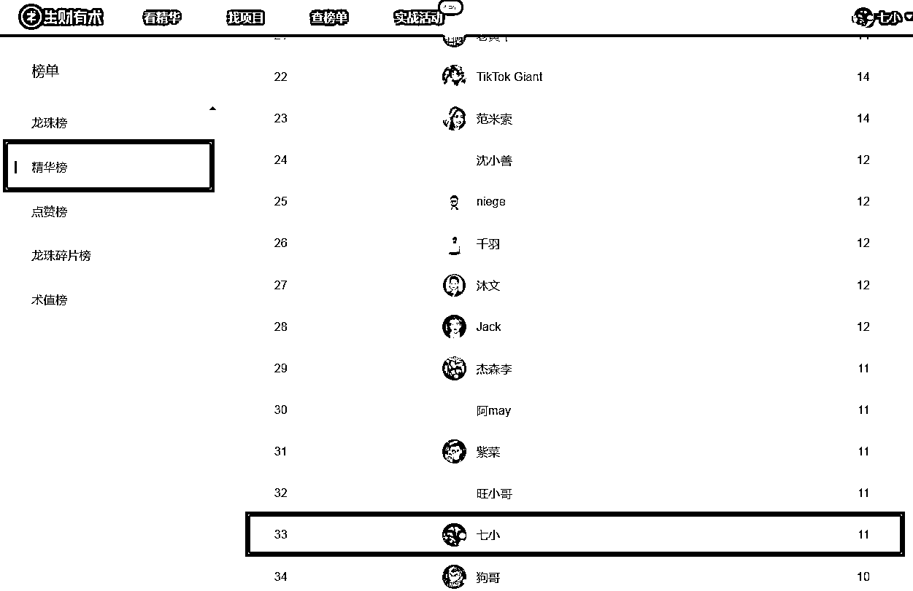
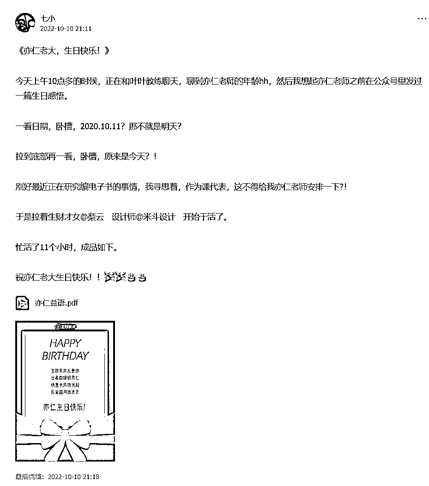

来源：https://mkfwp3u79v.feishu.cn/docx/ETU6dd94wo3ZlMxst46cnwgZn5g
你好，我是七小，99年的深圳靓仔，知识管理专家。
精通搜索、采集、内容整理、关键词挖掘，擅长把碎片化信息整合成体系化的知识产品来变现。
江湖人称生财课代表，专业解决生财新人圈友的各种问题，致力于帮助圈友发挥好生财有术的价值。

微信：rickea150，添加请备注：生财圈友 。欢迎交流。
公众号：七小的人生游戏攻略
希望下面这些文章，能帮助你更好的发挥生财有术的价值~
https://t.zsxq.com/0cr92jWjN
一、项目：为什么找不到适合你的项目？
1）想复杂了
2）格局小了
3）既要又要
二、启动：为什么你迟迟没有开始行动？
1）缺乏自信
2）耗在学习
三、坚持：为什么你会半途而废？
1）认知不够
2）动力不够
四、结果：为什么你的付出没有对等的回报？
1）自恋自嗨
2）道德包袱
五、尾言碎碎念
https://t.zsxq.com/0c1tmxtl9
文章目录如下：
—、搜索采集与数据分析
1）搜索目标信息
2）采集目标信息
3）关键词查询阅读
4）痛点需求分析
二、七个痛点的总结与解决
①内容阅读问题：内容太多，阅读压力大，看不过来了，希望内容能分类、订阅
②实操落地问题：进来好久但没赚到钱，觉得内容不够实操，不知如何下手，希望能有内容分级
③对比焦虑问题：和优秀的圈友比较，越对比越自卑焦虑
④踩坑避坑问题：大佬成功经验难以复制，希望能有更多可学习的避坑经验
⑤浮躁切换问题：项目看的眼花缭乱，自己变得浮躁了，项目不停换
⑥三无人员问题：作为无资源、无产品、无能力的三无人员，不知道如何用好生财有术
⑦链接圈友问题：链接不到圈友，感觉自己游离在圈子外
https://t.zsxq.com/0crOSOGNx
继【羊了个羊】商拆文之后，又是一篇爆肝、呕心沥血之作，全文8300+字
图解较多，建议电脑端观看，目录如下：
（第一部分比较好玩，请务必电脑上跟着操作一遍，会让你打开新世界大门的~）
一、价值百万的【生财地图】深度开发
1）我的分析思路
2）V1.0寻找【生财地图】
3）V2.0用【脚本】制作【生财地图链接版】
4）V3.0【生财地图】＋【多平台拓展】+【批量打开】
5）实例演示
（第二部分为内容整合部分，无需全部看完，挑对你有用的看就行）
二、字数百万的【亦仁发表】挖宝之旅
——我的分析思路
宝藏1）标签分析:跟着生财学运营
宝藏2）365个赚钱案例:初版生财的核心
宝藏3）生财风向标
宝藏4）《知识库》《项目库》《精华帖》
宝藏5）生财专属视频课(航海实战资料包)
宝藏6）失败踩坑翻车专题
宝藏7）普通人的焦虑迷茫与起步
宝藏8）实体生意案例合集
宝藏9）优秀圈友的公众号推荐
宝藏10）亦仁小建议
https://t.zsxq.com/0cXBjGMha
零、前言
一、文章要点提炼
二、基础玩法:两套必看方案
1）黎叔方案
2）查林:黎叔方案Plus版
三、玩法拓展:还能怎么玩?
1）卖法总览表
2）如何吸引用户关注你在做的事?
3）如何预估感兴趣的人数?
4）如何带节奏，引导下单?
5）怎样打消用户顾虑，让用户愿意下单?
6）如何返现/发红包，不仅不亏钱还能变现?
7）最后还差几十本没卖完，怎么办?
8）如何—鱼多吃，制造三次转化机会?
四、高手们的算账过程展示
1）公众号送日历涨粉投产计算
2）黎叔方案
3）范米索找投资人回报计算
4）赵不刀短视频带货工作量/ROI计算
五、过程中不足、阻碍、失败展示
1）铺垫不够/信任不足/在意他人看法
2）失败发红包没安排好
3）意向用户私聊没跟上
六、尾言碎碎念
https://t.zsxq.com/0cPFdIqA3
一、【破圈】普通人如何破圈成长？
1）为什么要破圈？
2）别的圈子凭什么让你破？
3）普通人破圈有什么方法？
二、【链接】普通人如何链接贵人获得快速成长？
1）如何向牛人寻求帮助？
2）如何链接牛人？
3）如何进行初次有效交流？
4）日常链接要注意什么？
https://t.zsxq.com/0csNCJM04
文章目录：
一、项目地图：项目有什么？
二、项目公式：205个项目命名有什么规律？
三、生财风向标：为什么风向标是赚钱密码？
四、项目变迁：用【虚拟资料项目】带你看历史规律
五、收入方式：都是赚钱，兼职、副业、创业项目有何区别？
六、蓝海挖掘：如何挖掘一个蓝海项目？
七、项目挖掘：如何通过关键词来挖掘项目？
八、项目挑选：怎么找到一个适合自己的项目？
九、项目判断：怎么判断项目行不行？
十、项目验证：怎么做项目的MVP？
十一、项目执行：如何把精华帖中的项目落实下来?
十二、项目放弃：我们是如何错失赚钱项目的？
https://t.zsxq.com/0czhoSSd5
一、信息
1）希望有赚钱知识体系
2）信息乱七八糟
3）信息量太大，看完帖之后很焦虑，干脆长期不打开星球
4）信息太多了，无法分辨好坏，看完后消化不了
5）星球里面的很多信息根本看不懂，也不知道在讲什么
6）文章太长了，根本看不完
二、自信心与自尊心
1）感觉自己没有任何优势，怀疑自己赚不到钱
2）不相信自己能赚到很多钱
3）试了一段时间，觉得自己是傻逼，什么都不会，活该赚不到钱
4）不敢发帖，我的东西很浅，还是别发了吧，免得被人笑话
三、社交链接
1）不敢添加大佬，感觉不知道怎么说话，担心说错话，也无法提供价值
2）小白毫无存在感
3）都是一帮割韭菜的人在发帖
四、面对困难
1）经常会被一些具体的问题卡住，也不好意思去问别人
2）做一个项目，遇到几十上百个具体的问题，也不会搜索，也没人问，太难了，直接放弃
3）有没有高手，能手把手带着做？
五、疲劳与担忧
1）每天上班太累了，回到家只想刷抖音，不想做任何尝试
2）晚上加班，周末休息，没有时间做副业，但中年危机，又很焦虑，该怎么办
3）要是选错项目了，会浪费很多时间和资金，还不如不动
https://t.zsxq.com/0cHxPn7qK

https://t.zsxq.com/0c7faBEiR